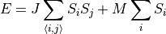

Hamiltonian¶
Contains definitions for Hamiltonians for the Ising problem.
- class ising.hamiltonian.Hamiltonian¶
Base class for all Hamiltonians.
- energy(spin)¶
Unimplemented energy method.
- Parameters
spin (
ising.spins.SpinConfig) – The spin configuration to find the energy of.
- temperature(spin, boltzmann)¶
Finds the normalized energy of a spin configuration with the given Boltzmann constant.
- Parameters
spin (
ising.spins.SpinConfig) – The spin configuration.boltzmann (float) – The boltzmann constant. Defaults to
ising.constants.BOLTZMANN_K.
- class ising.hamiltonian.ConstantHamiltonian(coupling, magnet)¶
Represents a Hamiltonian for an Ising system with constant spin coupling and magnetic coupling.
- Parameters
coupling (float) – The spin coupling constant for the system.
magnet (float) – The strength of the magnetic field in the direction of the spins.
- getcoupling()¶
Gets the coupling constant stored in the Hamiltonian.
- Returns
The value of the coupling constant.
- getmagnet()¶
Gets the strength of the magnetic field stored in the Hamiltonian.
- Returns
The strength of the magnetic field.
- setcoupling(value)¶
Sets the value of the coupling constant.
- Parameters
value (float) – The new value of the coupling constant.
- Returns
The new value of the coupling constant.
- setmagnet(value)¶
Sets the strength of the magnetic field.
- Parameters
value (float) – The new strength of the magnetic field.
- Returns
The new strength of the magnetic field.
- class ising.hamiltonian.PeriodicHamiltonian(coupling, magnet)¶
See the constructor for
ConstantHamiltonian. ExtendsConstantHamiltonian. Has periodic boundary conditions.- energy(spin)¶
Finds the energy of a spin configuration with the parameters specified by the Hamiltonian. Uses the equation

- Parameters
spin (
ising.spins.SpinConfig) – The spin configuration.- Returns
The energy of the given spin configuration.
- class ising.hamiltonian.NPHamiltonian(coupling, magnet)¶
See the constructor for
ConstantHamiltonian. ExtendsConstantHamiltonian. Has non-periodic boundary conditions.- energy(spin)¶
Finds the energy of a spin configuration with the parameters specified by the Hamiltonian.
- Parameters
spin (
ising.spins.SpinConfig) – The spin configuration.- Returns
The energy of the given spin configuration.
- class ising.hamiltonian.GraphHamiltonian(conns, mags)¶
Represents a Hamiltonian with arbitrary connections between spins.
- Parameters
conns (
ising.graph.Graph) – A graph representing the connections between spins.mags (float or list(float)) – The magnetic constants. If it is a single value, it is applied to all. If it is multiple values, it will be applied to each vertex in order.
- getconns()¶
Returns the graph representing the connections.
- Returns
The graph representing the connections between interacting spins.
- getmagnet()¶
Returns the magnetic constant(s).
- Returns
The magnetic constant or constants.
- setmagnet(mags)¶
Sets the magnetic constant.
- Parameters
mags (float or list(float)) – The magnetic constant or constants.
- Returns
The new value.
- energy(spin)¶
Calculates the energy of a given configuration.
- Parameters
spin (
ising.spins.SpinConfig.) – The spin configuration.